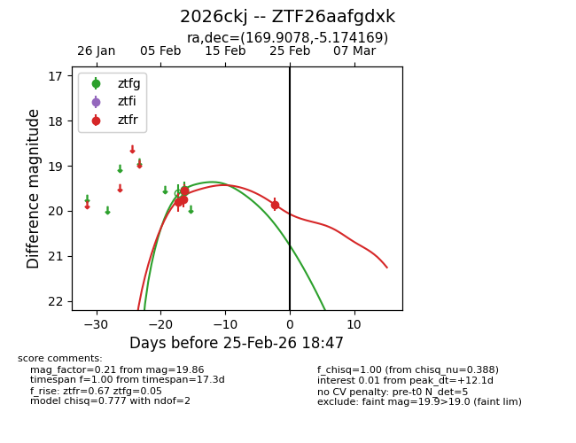
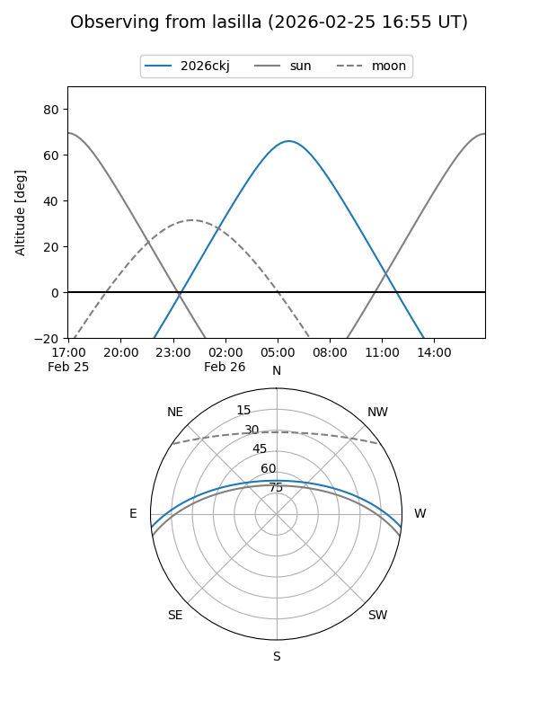
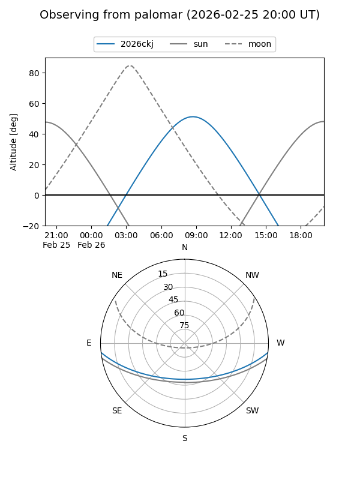
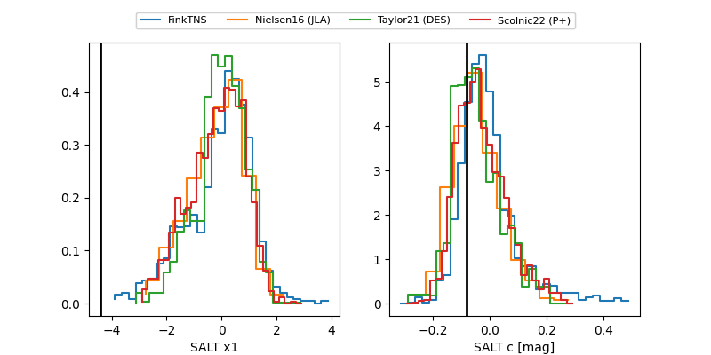

2026ckj
Target 2026ckj at 2026-02-25 18:49
Aliases and brokers:
FINK: link
Lasair: link
ALeRCE: link
TNS: link
YSE: link
alt names
ZTF26aafgdxk (ztf,fink_ztf)
2026ckj (tns,yse)
Coordinates:
equatorial (ra, dec) = 169.9078,-5.17417
equatorial (HMS+DMS) = 11:19:37.87,-05:10:27.01
galactic (l, b) = (265.0074,+50.81135)
Flags:
Photometry:
last ztfg=19.56, ztfr=19.86
2 ztfg, 4 ztfr detections
Lightcurve

Visibility


Additional plots
